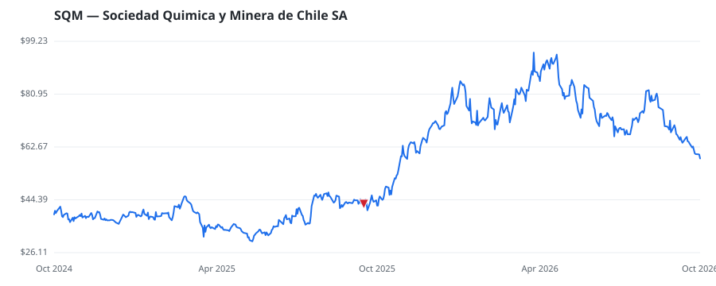

bullish · bearish · n/a — dots: price>SMA10 · SMA10>SMA50 · SMA50>SMA200 · up>down volume (20d)
Other · large cap

Sociedad Quimica y Minera de Chile is a Chilean commodities producer with significant operations in lithium (primarily used in batteries for electric vehicles and energy storage systems), specialty and standard potassium fertilizers, iodine (primarily used in X-ray contrast media), and solar salts. The company extracts these materials through its high-quality salt brine deposits and caliche ore. SQM also sells lithium concentrate from a joint venture hard rock lithium project in Australia and expanding its lithium refining assets in China. · website
| Revenue | — | Net income | $691.8M |
|---|---|---|---|
| Operating income | $1.1B | Diluted EPS | $13.68 |
| Assets | $11.5B | Equity | $5.2B |